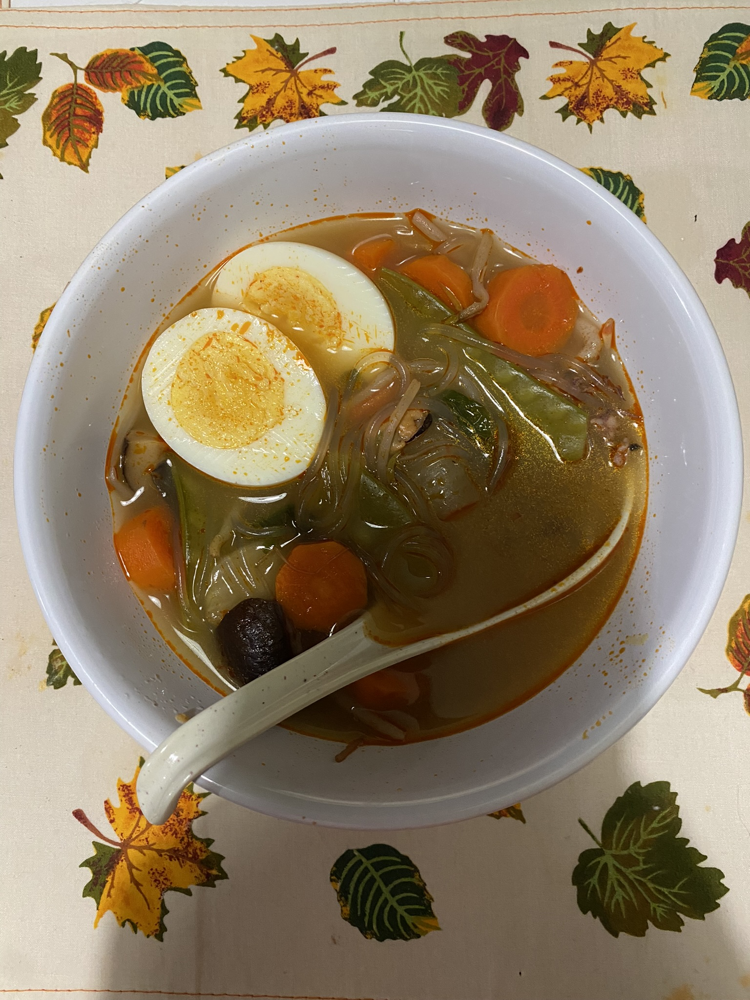

Cilantro Lime Trout
Marisco De Chino

Delicious Sopa De Marisco with a Asian inspired flavor, with a seafood mix, beansprouts, and baby bok choi
Super easy to make seafood soup with a hint of Asian flavors, topped with bok choi, bean sprouts and some sambal for a little bit of hotness
Ingredients
- Seafood mix of choice
- Sambal
- Water
- Beansprouts
- Bok Choi
- Boiled Eggs
- Noodles of choice
Steps
- Prepare seafood in this case a bag of frozed seafood (let thaw)
- Bring water to a boil
- Boil eggs in seperate boiling water
- After seafood taws throw seafood into the boiling water
- Add Sambal to water
- Throw in noodles
- add beansprouts
- add bok choi